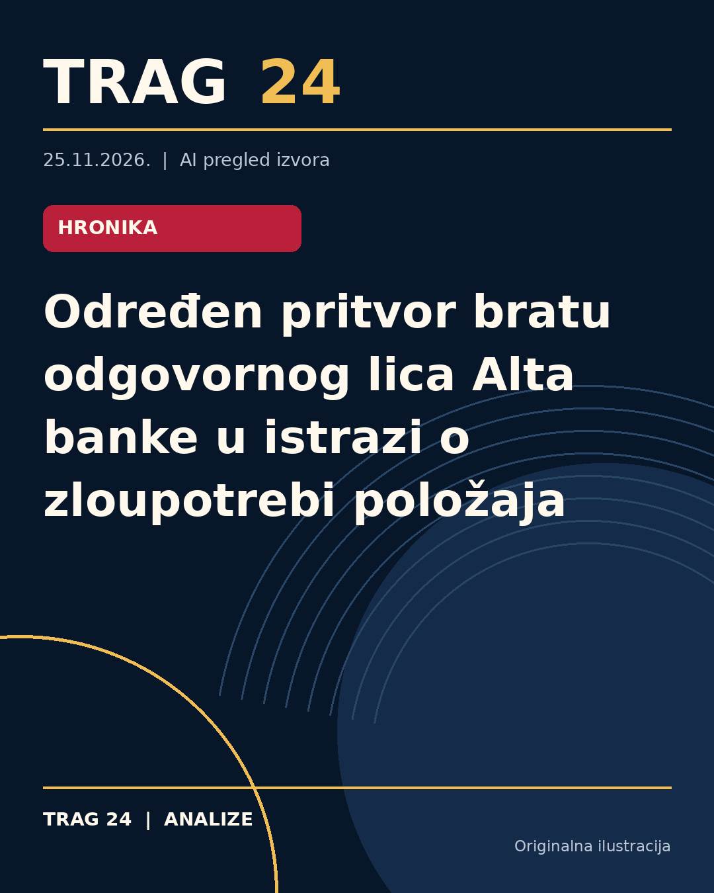

Određen pritvor bratu odgovornog lica Alta banke u istrazi o zloupotrebi položaja

ŠTA SE DOGODILO
Dubravku M., bratu vlasnika Alta banke Davora M., određen je pritvor do 30 dana zbog sumnje da je pomagao u zloupotrebi položaja. Njegovo hapšenje, zajedno sa direktorkom Alta Pay Group Tatjanom B., usledilo je nakon ranije pokrenute istrage protiv Davora M. i dvojice njegovih saradnika zbog navodne nezakonite prisvoje oko 390 miliona evra iz trezora banke.
HRONOLOGIJA
Dubravko M. je uhapšen tokom dana nakon što ga je saslušalo Javnog tužilaštvo za organizovani kriminal. Sudija za prethodni postupak Višeg suda u Beogradu potom mu je odredio pritvor. Rano u novembru hapšeni su i Davor M. i još dvojica saradnika u sklopu istrage o zloupotrebi položaja i mogućem iznosu koji je oštećena banka pretrpela. U pitanju su optužbe da novac evidentiran kao uplata iz menjačnica nije stigao do bankovnog trezora. Hapšenja Dubravka M. i Tatjane B. usledila su po nalogu tužilaštva i policije.
ŠTA NAVODE IZVORI
Izvori iz istrage navode da se sumnja da je Dubravko M. učestvovao u radnjama kojima je pomogao zloupotrebu položaja, posebno u vezi sa novcem koji nikada nije uplaćen u trezor banke, a koji je bio evidentiran kao uplata menjačnica kojima je upravljala direktorka Tatjana B. Izvori ne preciziraju detalje uloge osumnjičenih niti druge podatke iz istrage. Sumnje za sada nisu pravno potvrđene presudom.
ŠTA JE POTVRĐENO
Potvrđeno je da je Dubravku M. određen pritvor do 30 dana od strane Višeg suda u Beogradu po nalogu Drugog osnovnog javnog tužilaštva. Takođe, potvrđeno je hapšenje direktorke Alta Pay Group Tatjane B. u okviru iste istrage. Ranije su uhapšeni Davor M. i dva druga lica u sklopu istrage protiv Alta banke. Postoje optužbe za zloupotrebu položaja i krivična dela povezana sa finansijama banke, ali presuda još nije doneta.
ŠTA NIJE POTVRĐENO
Nije potvrđeno da su osumnjičeni krivi jer postupak je u toku i istraga nije završena. Nema dostupnih sudskih presuda niti zvaničnih dokaza o konkretnim radnjama koje su im stavljene na teret osim navoda iz istrage. Takođe, detalji o tačnom iznosu oštećenja i mehanizmu zloupotrebe ostaju predmet daljeg istraživanja. Navodi o umešanosti drugih osoba nisu potvrđeni u ovim dostupnim izvorima.
ŠTA OSTАJE OTVORENO: Ostavlja se otvorenom konačni ishod sudskog postupka protiv Dubravka M. i ostalih osumnjičenih. Ostaju nejasni svi detalji istrage, uključujući šta je konkretno bilo predmet zloupotrebe i kako je zaštićen pravni interes svih strana. Takođe nije poznata dalja sudbina direktorke Tatjane B. i moguće uključene kompanije. Javnost će pratiti razvoj događaja tokom procesuiranja slučaja u nadležnim pravosudnim organima.
Izvori
- https://www.euronews.rs/srbija/aktuelno/253715/pritvor-dubravku-m-u-slucaju-alta-banke/vest
- https://www.b92.net/info/hronika/288145/bratu-vlasnika-alta-banke-odredjen-pritvor/vest
- https://www.espreso.co.rs/vesti/hronika/1631847/bratu-vlasnika-alta-banke-odredjen-pritvor
Ova analiza je pripremljena uz pomoć veštačke inteligencije na osnovu javno dostupnih izvora. Navodi izvora nisu nužno nezavisno potvrđeni.